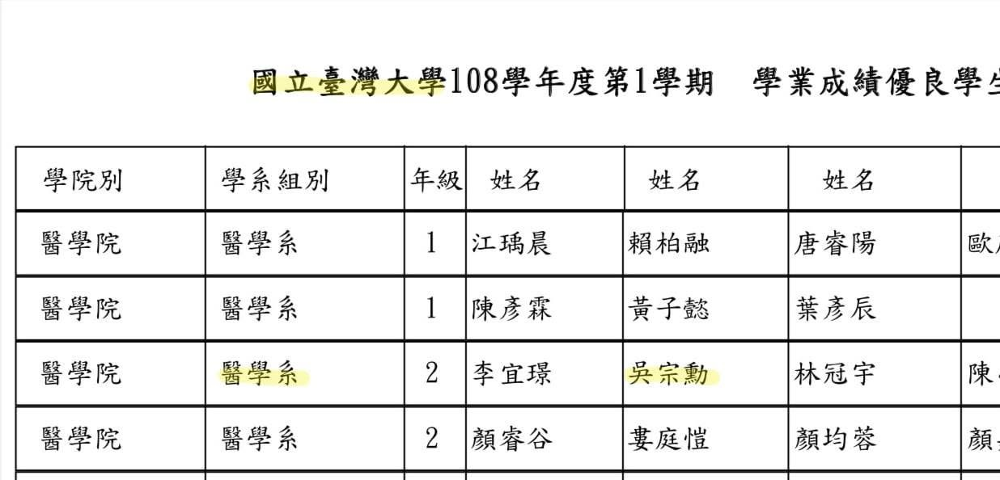
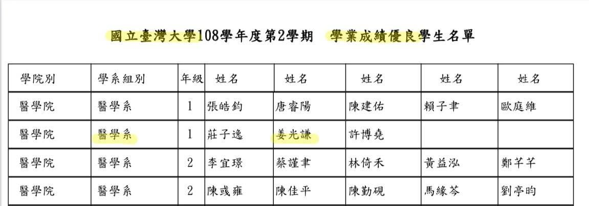
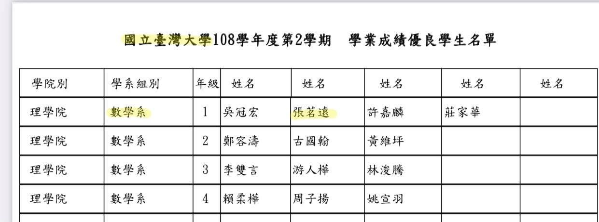
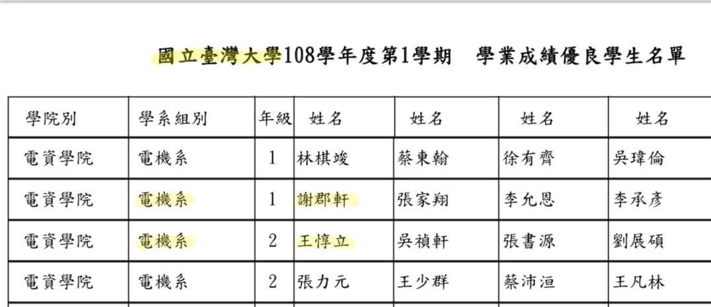

跟課有感—宗翰老師的震撼教育
之前跟著星一起在宗翰,硯吉老師的班上聽課,雖然已經過了兩年了,但第一堂課仍記憶猶新。當時正是招生季的試上,到處都非常熱鬧,孩子們剛考完會考,輕鬆愉快,到處逛補習班彷彿逛街般的心情！只有宗翰,硯吉老師的教室,帶著嚴肅和些許肅殺的氣息（哈）,教室內沒有鬧哄哄,沒有外面的喧囂...老師站上講台,拿起麥克風一開口,便散發出一股令人不得不專注打起精神的氛圍,那堂課宗翰老師的教學內容,都是需要讓孩子絞盡腦汁拼命思考的,課堂中間偶有一兩個學生趴著或不專注,立刻被老師嚴肅的點名,這是我頭一次感受到宗翰老師的震撼教育。
之後的每堂課,老師時常都有許多手寫補充題,而每次的補充題都是對同學的考驗。老師的補充題都是從一個基本觀念,慢慢一題題延伸到很進階的難題,不知不覺,突然會發現,很難的題目竟然也就聽得懂了!
曾經來到這班上的學生,離開的並不少,但是能堅定地跟到最後的孩子們,成績與性格都非常優秀,要能經得起兩位老師三年高強度訓練真不容易啊！

那屆畢業生,老師班上共有五位同學錄取台大醫學系,我記得某次上課宗翰老師邀了其中四位一起來我們班上分享學習方法與心得,姜同學就是其中之一。
我印象很深刻,他告訴台下的學弟妹們,上課要認真聽講,好好跟著宗翰老師學習就夠了,他還特別提到宗翰老師的極限學習法,我才恍然大悟,原來這就是宗翰老師對學生要求嚴格的深意啊!

老師班上這些優秀的學生,上了大學,也都繼續表現優良,在台大醫學系、電機系、物理系、數學系....獲得書卷獎。現在回過頭來看,兩位老師的課雖然辛苦,但是大家都在嚴格的要求和訓練下,提高了境界 脫胎換骨,到了大考前,老師的學生都達到了一般高中生不可企及的程度了,上了大學,這些累積歷練出來的實力,繼續讓這些孩子們受用,而這都是不間斷的努力,都是在老師課堂上被磨練出來的!

現在宗翰老師的獵豹數學網課也希望把一樣的學習方式與訓練帶給孩子們。
最近與幾位參與網課的學生家長聊孩子的學習狀況,聽到不少孩子堅持挑戰自己的決心,自動自發的學習,以及克服困難力求向上提升的積極學習態度,好幾位媽媽更是跟我說,看著孩子如此認真,也深受感動!真的很棒!
看到姜同學不僅應屆考上台大醫學系,還得到書卷獎,實在由衷的佩服!老師引領大家學習,總是強調要看得遠,所要培養孩子的能力,不是只有考上好大學,更是希望上大學之後繼續發光發熱,姜同學以及這幾位一樣得台大書卷獎的同學們,是我們孩子最好的學習典範!
https://www.facebook.com/groups/695697124716309/permalink/783088389310515/
